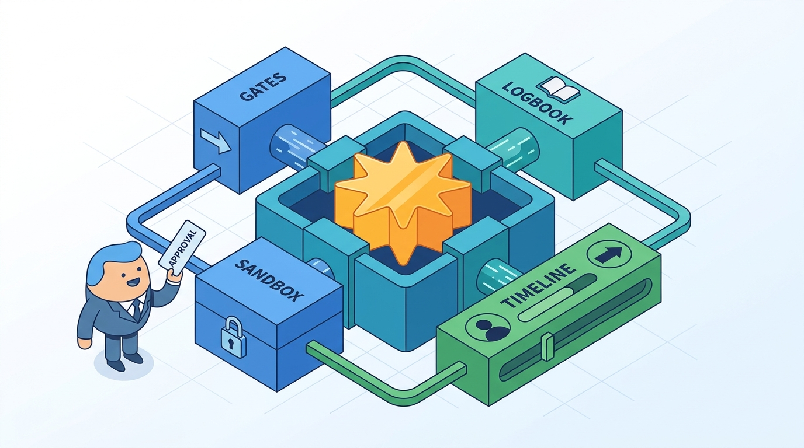

Image generated by Google Gemini (gemini-3-pro-image-preview)
Architecting Agentic Systems
How software architects, senior engineers and technical leaders design, operate and evolve systems in which a language model plans and acts: where the model may decide and what stays in code, what it may touch, what it remembers, how its actions are made durable, reversible or approved, and how evidence earns it more autonomy. Evidence-led and vendor-neutral, with a fictional running example and contrasting designs from coding, customer operations, back-office and high-stakes domains. This is a living journal and a work in progress: I revise it as I learn more through my work.
No posts match your search.